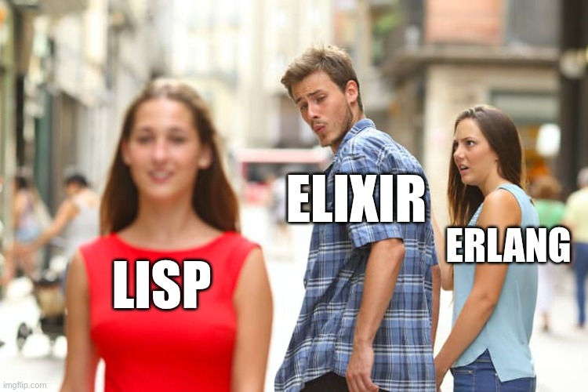

"Homoiconicity: From Lisp to Elixir"
What is Lisp
- Born in 1960 (~65 years ago).
- One of the oldest programming languages still alive.
- Parentheses.
- Everything is built from lists (LISt Processing).

My Journey Into "Homoiconicity"
Lisp showed me something shocking
Exapmle C#
// Data
var list = new List {1, 2, 3, 4};
// Code
int sum = list.Sum();
Code != Data
What if your code and your data spoke the same language?
; Data
'(1 2 3 4)
; Code
(+ 1 2 3 4)
Code = Data
What is Homoiconicity?
- Language where code and data share the same representation
- In Lisp, you can let data describe the logic
- Your program can create and run new programs at runtime
Lisp (s-expression)?
- Language where code and data share the same representation
Let’s make a fun little chat app
- Minji and Haerin
- Send messages to each other
- Nothing fancy... or is it?
What we're building
- A terminal-based chat app
- Each user runs their own terminal
- They connect to the same chat room
Start Nodes
# Terminal 1
iex --sname node1 -S mix
# Terminal 2
iex --sname node2 -S mix
Node.connect(:'node1@127.0.0.1')
Start Chat
# Node 1
UserClient.start("Minji", :room)
# Node 2
UserClient.start("Haerin", :room)
# [Node 2] Send message
ChatRoom.send_message(:room, "Haerin", "Hi! Minji")
Demo

🎉SURPRISE
This is a Distributed System
How It Worked
- Each terminal is a node
- Processes register with a distributed registry(:global)
What Happens When a Node Fails
- Kill Node 1 (Haerin’s terminal)
- Wait...
Haerin reappears from Node 2Chat continues 💬✨- ❌ Haerin is gone (no state recovery)
- ✅ Chat works again if Haerin reconnects manually
Tools for Building Distributed Elixir Systems
Real-World Applications of Distributed Systems
- WhatsApp and Messenger (real-time messaging)
- Multiplayer online games (state sharing between nodes)
- Discord and Slack
- IoT systems (sensor nodes sharing data)
- Financial trading systems
- Kubernetes and container orchestration

Summary
“Elixir makes distributed systems... simple.” 🦸♂️💥

QA |> exit(0)